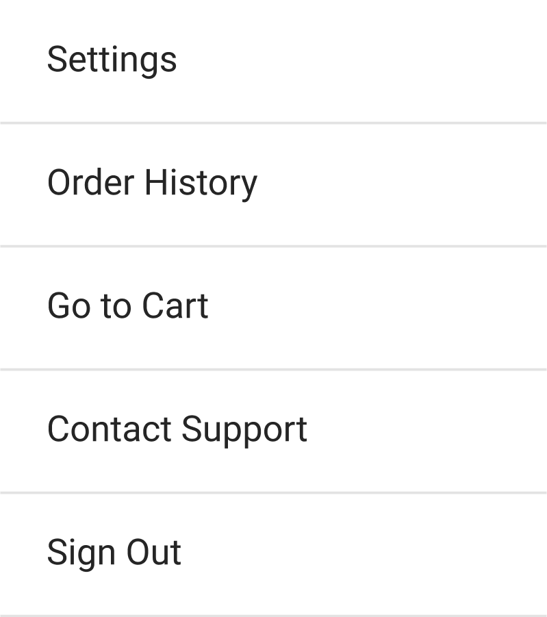
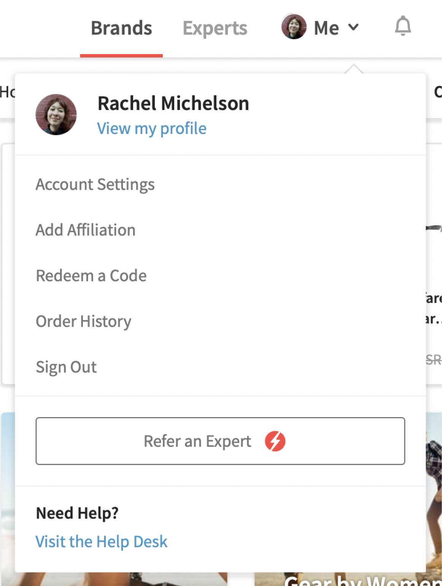
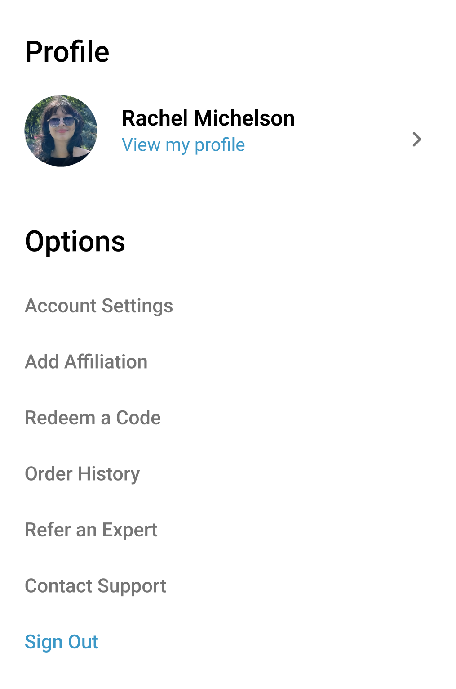

Making go-to-cart a primary action, adding a profile menu, and updating the Android navigation and color scheme
This was my secondary project for my internship with ExpertVoice.
The project started out simple, with the task of adding a cart icon to the Android experience. However, as I continued to design, I found more and more design flaws that needed to be fixed.
The end result is a new Android design that aligns more closely with the web and iOS experience, and is overall more intuitive and easy to use.
TIMELINE
June - August 2023
ROLE
Product Designer
SKILLS
Figma
TEAM
Rachel Michelson,
with mentorship
from Isaac Kulka
Steven Parker (QA)
PROBLEM
Android users can only access their carts by opening a kabob menu first, an unintuitive experience that deprioritizes the checkout process.
Original Android go-to-cart flow
DESIGN ITERATIONS
The simplest solution? Shoving a cart button into the top right, with all of the other icons.
7 icons is ... a lot of icons.
THE MENU
The first step I wanted to take in reducing the number of icons in the top right was eliminating the kabob menu.

Kabob menu

Profile menu on web

My designed Android profile menu
This results in a design more consistent with our web experience.
Next, I explored redesigning the navigation bars.
Not enough physical space between icons
Red color distracts users from main content
A color scheme consistent with our iOS experience
After presenting these designs to other engineers and designers, we decided the red was too vibrant to be a primary color, and ultimately distracts users from the content we want them to focus on.
FINAL DESIGNS
This Android redesign has since been deployed. Special thanks to the engineering team at ExpertVoice for implementing and testing my designs.
Cart icon is a primary action, accessible from all pages, encouraging users to checkout.
A page before a user's profile listing options previously held in the kabob menu
A page before a user's profile listing options previously held in the kabob menu
A calmer white design. Easier on the eyes, and allows users to focus on shopping.
NEXT STEPS
A potential future design is an expansion of the search bar, encouraging more users to shop through an increased width of the search bar.
WHAT I LEARNED
01
Communication with devs
I learned to schedule many Zoom meetings with all involved parties, including developers, QAs, and my mentor.
We discussed timelines, how long the design would take to implement in terms of sprints, and how it would mesh with other projects everyone had going on.
02
Phasing
I created multiple versions, starting at an MVP, growing in changes towards the idea of an ideal design.
This will hopefully help to serve as a timeline for potential improvements to the Android app.
03
The design process is rarely straightforward
Rather than shove a cart button in the top right, I ended up unraveling all of the design flaws in the Android app.
Though the final design looks like a simple imitation of the iOS app, it took many many steps to get there.
Most importantly, its more user friendly, and encourages checkouts. A win-win!